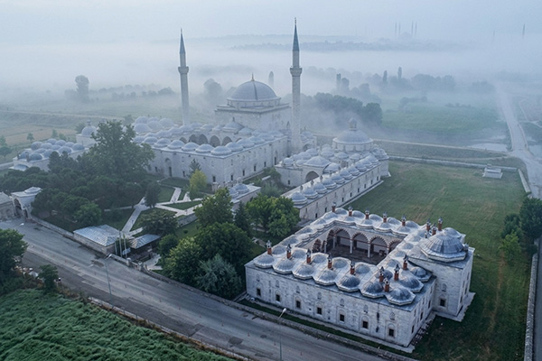
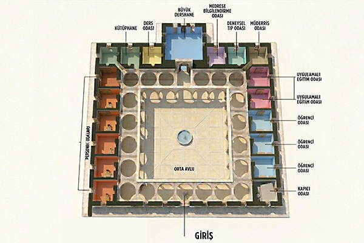
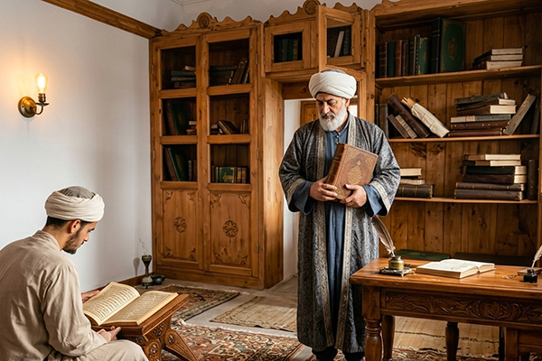
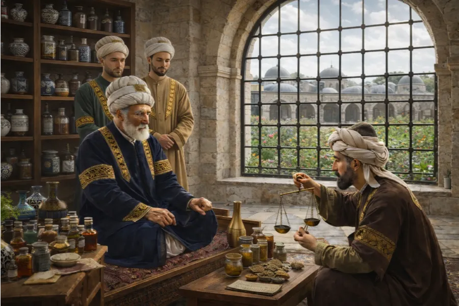
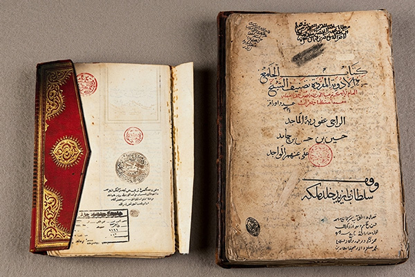
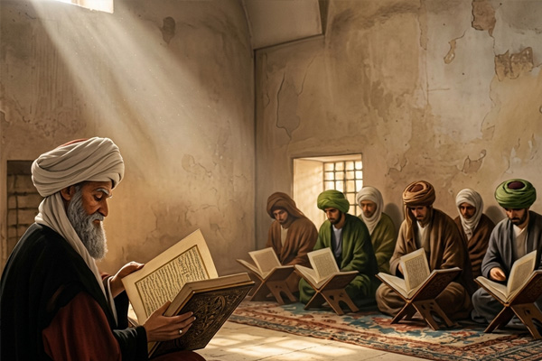

"Teoriden Pratiğe, Bilgiden Şifaya"
Medresetü'l-Etibba — Osmanlı'nın Erken Dönem Tıp Fakültesi
Osmanlı Sultanı II. Bayezid, Edirne için sadece bir hastane düşünmemiş; hemen yanına hekimlerin de yetişeceği bir tıp okulu inşa etmişti.
Darüşşifanın doğu ucuna bitişik olarak yapılmış olan Medrese, klasik Osmanlı mimarisinin en yalın ve işlevsel örneklerinden biridir.
18 öğrenci odası ve bir dershaneden oluşan bu önemli medrese, Osmanlı eğitim sistemi içinde en üst düzey kabul edilen "60'lık (bir dönem de altmış üstü) medreseler" arasında yer alırdı. Öğrenciler teorik eğitimlerini, hemen yanındaki darüşşifada hastalar üzerinde uygulama imkânı bularak tamamlarlardı.

Külliyeyi gezerken gözlemlerini kaleme alan ünlü Türk gezgini Evliya Çelebi, medrese hakkında da şunları yazmıştır:
Medresenin eğitim kadrosunda 18 öğrenciye ders veren bir müderris, bir müderris yardımcısı, bir kütüphaneci ve iki hizmetli bulunurdu. Öğrencilerin tüm ihtiyaçları karşılandığı gibi, onlara ayrıca günde ikişer akçe burs verilirdi.

Osmanlı'nın en önemli şehirlerinden biri olan Edirne'nin bu önemli medresesinde meşhur müderrisler görev yapmıştır. Sultan II. Bayezid Medresesi'nin ilk müderrisi Şeyh Lütfullah Zade Bahaüddin Efendi'dir.

Medresede 35'ten fazla büyük âlimin ders verdiği bilinmektedir. Bu isimler, Osmanlı tıp mirasının başlıca taşıyıcılarıdır:

Başta külliyenin kurucusu Sultan II. Bayezid olmak üzere birçok padişah, kendi mühürlerini bastıkları dönemin önemli el yazması tıp kitaplarını medreseye bağışlamışlardır. Aralarında İbn-i Sina ve Fatih Sultan Mehmed'in hocası Akşemseddin'in de olduğu önemli âlimler tarafından kaleme alınan bu kitapların birçoğu zaman içinde kaybolup gitse de 38 adedi günümüze ulaşmış olup Selimiye Yazma Eserler Kütüphanesinde koruma altındadır.

